Architecture
Choose the owner of a change first: file format, workbook operations, persistence or presentation. The schema owns the public format. CLI and web share service commands.
How workbook commands run

Open full-size diagram · Download Mermaid source

On manual save or autosave, the workbench submits its in-memory changes and the revision hash from the last read. Storage applies operations under a lock, writes a recovery record and rechecks the disk revision before replacing the workbook. The conversion module handles XLSX, XLS and CSV interchange and can render a read-only HTML snapshot from memory.
Module dependencies
Arrows point from a module to its dependency. Solid lines show direct imports. Dashed lines show calls across processes. The diagram highlights the main connections. The table lists the direct project dependencies of each runtime module.


Module ownership and boundaries
| Module | Responsibility and boundary | Direct project dependencies |
|---|---|---|
| packages/schema | Owns workbook types, addresses, validation and capacity rules, portable across browser and Node. | — |
| packages/univer-adapter | Maps AIB to and from Univer snapshots, dates, styles and shared formulas in memory. | schema |
| packages/core | operations.ts defines the operation contract. The engine edits, evaluates, reads and diffs in-memory workbooks. | schema, univer-adapter |
| packages/storage | Owns native-workbook transactions, paths, atomic replacement, locks, revisions, drafts, undo and recovery. | schema, core |
| packages/conversion | Decodes source formats and returns export bytes with loss reports. The offline HTML renderer honors visibility. | schema, univer-adapter, core |
| packages/service | Dispatches commands. context.ts publishes the AI contract, formats.ts orchestrates conversion policy and request.ts defines request/error envelopes. | schema, univer-adapter, core, storage, conversion |
| apps/cli | Parses arguments and stdin, emits JSON, and dispatches locally or through loopback RPC. | server, resources.ts, service, schema |
| apps/server | Owns loopback sessions, OS dialogs, workbook registration, HTTP and static serving. listen.ts selects browser-accessible ports. | resources.ts, language.ts, service, storage, schema |
| apps/web | Coordinates selection, input, history and synchronization. api.ts handles session requests, autosave.ts schedules saves, local-edits.ts manipulates the editor model. | language.ts, core (statistics), schema, univer-adapter. Also imports a type from server/file-dialog. |
| apps/launcher | Starts the workbench through the OS file association. | cli (child process) |
| apps/resources.ts | Exports the bundled offline guide in the selected language. | language.ts, schema |
| apps/language.ts | Defines supported languages and resolves locale preferences. | — |
| scripts · tests · skills | Tooling builds and stages distribution assets. Unit, browser and archive tests exercise public entry points. The skill supplies offline model guidance. | Development and distribution tools |
Data and failure contracts
A revision is the SHA-256 of disk bytes. CLI and editor writes share the same path lock and expectedHash check. External programs can bypass advisory locks. Use the CLI or a draft for coordinated writes. Recovery lives under AIB_HOME, separate from workbook contents.
Models use context to obtain the version, operation schema and optional metadata. The service decides whether conversion loss is accepted and codecs report actual issues. Update the validator, English and Chinese guides and regression cases when changing fields, types or limits.
Extension checklist
For a new operation update core/operations, engine behavior, regression coverage and the relevant CLI/web entry point. For a new format add its codec, service policy, capability declaration and round-trip test. npm run check verifies dependency directions and documentation coverage.